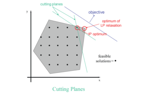

The problems most commonly solved by the Gurobi Parallel Mixed Integer Programming solver are of the form:
| Objective: | minimize cT x |
| Constraints: | A x = b (linear constraints) |
| l ≤ x ≤ u (bound constraints) | |
| some or all xj must take integer values (integrality constraints) |
The integrality constraints allow MIP models to capture the discrete nature of some decisions. For example, a variable whose values are restricted to 0 or 1, called a binary variable, can be used to decide whether or not some action is taken, such as building a warehouse or purchasing a new machine.
The Gurobi MIP solver can also solve models with a quadratic objective and/or quadratic constraints:
| Objective: | minimize xT Q x + qT x |
| Constraints: | A x = b (linear constraints) |
| l ≤ x ≤ u (bound constraints) | |
| xT Qi x + qiT x ≤ bi (quadratic constraints) | |
| some or all x must take integer values (integrality constraints) |
MIP models with a quadratic objective but without quadratic constraints are called Mixed Integer Quadratic Programming (MIQP) problems. MIP models with quadratic constraints are called Mixed Integer Quadratically Constrained Programming (MIQCP) problems. Models without any quadratic features are often referred to as Mixed Integer Linear Programming (MILP) problems.
What follows is a description of the algorithm used by Gurobi to solve MILP models. The extension to MIQP and MIQCP is mostly straightforward, but we won’t describe them here.
Mixed Integer Linear Programming problems are generally solved using a linear-programming based branch-and-bound algorithm.
Basic LP-based branch-and-bound can be described as follows. We begin with the original MIP. Not knowing how to solve this problem directly, we remove all of the integrality restrictions. The resulting LP is called the linear-programming relaxation of the original MIP. We can then solve this LP. If the result happens to satisfy all of the integrality restrictions, even though these were not explicitly imposed, then we have been quite lucky. This solution is an optimal solution of the original MIP, and we can stop. If not, as is usually the case, then the normal procedure is to pick some variable that is restricted to be integer, but whose value in the LP relaxation is fractional. For the sake of argument, suppose that this variable is x and its value in the LP relaxation is 5.7. We can then exclude this value by, in turn, imposing the restrictions x ≤ 5.0 and x ≥ 6.0.
If the original MIP is denoted P0, then we might denote these two new MIPs by P1, where x ≤ 5.0 is imposed, and P2, where x ≥ 6.0 is imposed. The variable x is then called a branching variable, and we are said to have branched on x, producing the two sub-MIPs P1 and P2. It should be clear that if we can compute optimal solutions for each of P1 and P2, then we can take the better of these two solutions and it will be optimal to the original problem, P0. In this way we have replaced P0 by two simpler (or at least more-restricted) MIPs. We now apply the same idea to these two MIPs, solving the corresponding LP relaxations and, if necessary, selecting branching variables. In so doing we generate what is called a search tree. The MIPs generated by the search procedure are called the nodes of the tree, with P0 designated as the root node. The leaves of the tree are all the nodes from which we have not yet branched. In general, if we reach a point at which we can solve or otherwise dispose of all leaf nodes, then we will have solved the original MIP.
To complete our description of (LP-based) branch-and-bound we need to describe the additional logic that is applied in processing the nodes of the search tree. Let us assume that our goal is to minimize the objective, and suppose that we have just solved the LP relaxation of some node in the search tree. If it happens that all of the integrality restrictions in the original MIP are satisfied in the solution at this node, then we know we have found a feasible solution to the original MIP. There are two important steps that we then take. First, we designate this node as fathomed. It is not necessary to branch on this node; it is a permanent leaf of the search tree. Second, we analyze the information provided by the feasible solution we have just found, as follows. Let us denote the best integer solution found at any point in the search as the incumbent. At the start of the search, we have no incumbent. If the integer feasible solution that we have just found has a better objective function value than the current incumbent (or if we have no incumbent), then we record this solution as the new incumbent, along with its objective function value. Otherwise, no incumbent update is necessary and we simply proceed with the search.
There are two other possibilities that can lead to a node being fathomed. First, it can happen that the branch that led to the current node added a restriction that made the LP relaxation infeasible. Obviously if this node contains no feasible solution to the LP relaxation, then it contains no integer feasible solution. The second possibility is that an optimal relaxation solution is found, but its objective value is bigger than that of the current incumbent. Clearly this node cannot yield a better integral solution and again can be fathomed.
There are two additional important values we need to introduce to complete our description of branch-and-bound. First observe that, once we have an incumbent, the objective value for this incumbent, assuming the original MIP is a minimization problem, is a valid upper bound on the optimal solution of the given MIP. That is, we know that we will never have to accept an integer solution of value higher than this value. Somewhat less obvious is that, at any time during the branch-and-bound search we also have a valid lower bound, sometimes call the best bound. This bound is obtained by taking the minimum of the optimal objective values of all of the current leaf nodes. Finally, the difference between the current upper and lower bounds is known as the gap. When the gap is zero we have demonstrated optimality.
The field of mixed integer programming has witnessed remarkable improvements in recent years in the capabilities of MIP algorithms. Four of the biggest contributors have been presolve, cutting planes, heuristics, and parallelism. We now give high-level overviews of these four components.
Presolve refers to a collection of problem reductions that are typically applied in advance of the start of the branch-and-bound procedure. These reductions are intended to reduce the size of the problem and to tighten its formulation.
A simple example of a size-reducing transformation is the following. Suppose a given problem contains the following constraints:
x1 + x2 + x3 ≥ 15
x1 ≤ 7
x2 ≤ 3
x3 ≤ 5
Clearly the only way that all of these constraints can be satisfied is if x1 = 7, x2 = 3, and x3 =5. In this case we can substitute out these variables, completely removing them from the formulation along with the above four constraints. The list of such possible reductions, of which this is only one, is quite extensive and can have an enormous effect on the overall size of the problem.
The above reduction is what we would call an LP-presolve reduction, since its validity does not depend on integrality restrictions. An example of an MIP-specific reduction is the following. Suppose that x1 and x2 are non-negative integer variables and that our formulation includes a constraint of the following form:
2 x1 + 2 x2 ≤ 1.
Dividing both sides of this constraint by 2 yields:
x1 + x2 ≤ ½.
Since x1 and x2 are both required to be integral, this inequality clearly implies that x1 + x2 ≤ 0, and so by non-negativity that x1 = x2 = 0. Hence both of these variables and this constraint can be removed from the formulation. Note also that this reduction is different in character from the first in the sense that we have actually reduced the set of feasible solutions to the LP relaxation, even though the set of integer feasible solutions has remained the same. This kind of tightening can be critical to the solution of an integer program, and is one of the reasons that MIP presolve is an important tool in the solution on MIPs, much more so than LP presolve in the solution of linear programs.
Let us now consider the idea of cuttings planes. We should say at the outset that the theory of cutting planes is deep and extensive. It is also generally accepted to be the single most important contributor to the computational advances that have been made in integer programming over the last several years. The idea of cutting planes is that they tighten the formulation by removing undesirable fractional solutions, as in the case of MIP presolve, but that they do this during the solution process and without the undesirable side-effect of creating additional sub-problems (unlike branching).

Here is one simple example of a cutting plane. Suppose our formulation includes the following constraint:
6 x1 + 5 x2 + 7 x3 + 4 x4 + 5 x5 ≤ 15,
where x1 through x5 are restricted to be binary. Suppose in addition that we have just solved an LP relaxation and that these variables take the following values in this LP relaxation: x1 = 0, x2 = 1, x3 = x4 = x5 = 3/4. This undesirable solution can be excluded with the following observation: since 7 + 4 + 5 = 16 > 15, it is not possible that x3 = x4 = x5 = 1, and hence that the following new inequality is a valid addition to the given MIP: x3 + x4 + x5 ≤ 2. Since 3/4 + 3/4 + 3/4 = 9/4 > 2, the new inequality cuts off the current solution. This inequality is an example of a so-called knapsack cover.
The reader may ask at this point why we have not simply added this new constraint, or cut, at the start. There are several reasons. One is that there are generally an enormous number of such additional constraints. It would be too expensive to find them all, and likely impossible to add them all to the model. A second reason is that adding constraints makes the LP relaxations progressively harder to solve. We only want to add these constraints if we know they will help. Judiciously adding such constraints can have an enormously beneficial effect on the solution process.
Our next topic in this discussion is heuristics. We introduced the concept of the incumbent in our introduction to branch-and-bound. Having good incumbents, and finding them as quickly as possible, can be extremely valuable in the MIP search for a number of reasons. First, it may not be possible to solve a problem to provable optimality. For example, the underlying MIP may just be too difficult, or there may be some user imposed restriction on the amount of time that we can allow our MIP algorithm run. In either case, we want to have the best possible feasible solution at termination. Having good feasible solutions also helps the search process prior to termination. The better the objective value of the incumbent, the more likely it is that the value of an LP relaxation will exceed it (in a minimization problem) and hence lead to a node being fathomed.
As the above remarks are meant to suggest, it has turned out to be extremely valuable to do a little extra work at some of the nodes of the search tree to see if a good integer feasible solution can be extracted, even though integrality has not yet resulted due to the branching. For example, it may be that many of the integer variables, while not integral, have values that are quite close to integral. We could then consider rounding some of these variables to their nearby values, fixing them to these values, solving the resulting LP relaxation, and repeating this procedure several times in the hopes that all integer variables will fall into line. If they do, and if the resulting feasible has a better objective value than the current incumbent, we can replace that incumbent and proceed. Gurobi includes multiple such heuristics of many different flavors.
As noted at the beginning of this discussion, the Gurobi MIP solver runs in parallel. The main source of parallelism is the fact that different nodes in the MIP tree search can be processed independently. As is probably apparent, however, the root node presents limited parallelism opportunities. Thus, models that explore large search trees can exploit cores quite effectively, while those that spend the majority of their runtime at the root node are more constrained in their ability to utilize multiple cores.
In addition to the techniques discussed above, a modern MIP solver will include a long list of additional techniques. A few examples include sophisticated branch variable selection techniques, node presolve, symmetry detection, and disjoint subtree detection. The goal in most cases is to limit the size of the branch-and-bound tree that must be explored.
The behaviors of most of the strategies and techniques described here can be adjusted using Gurobi parameters. While some models can benefit from parameter tuning, our goal in designing and building the Gurobi Optimizer has been to make the default settings work as well as possible across a broad range of models. You generally shouldn’t need to worry about the details of how the different techniques work, or about how the associated parameters should be adjusted.